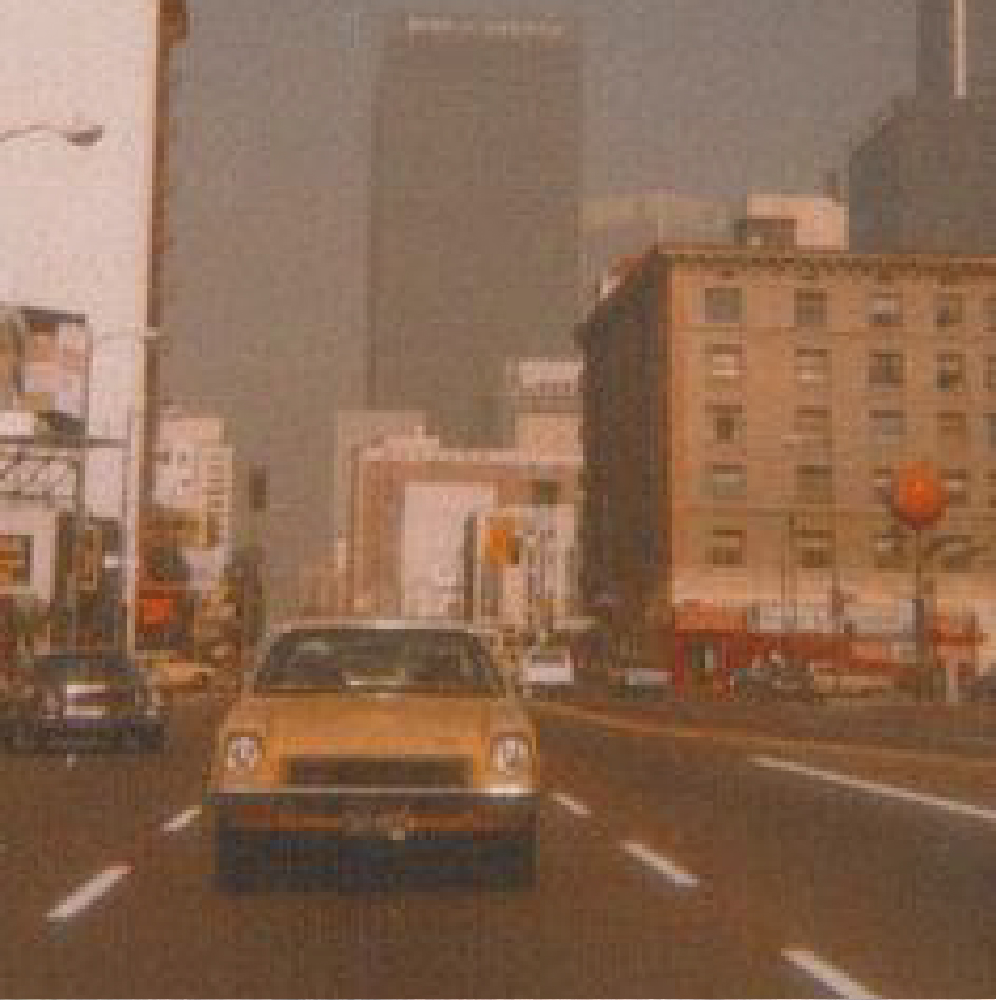
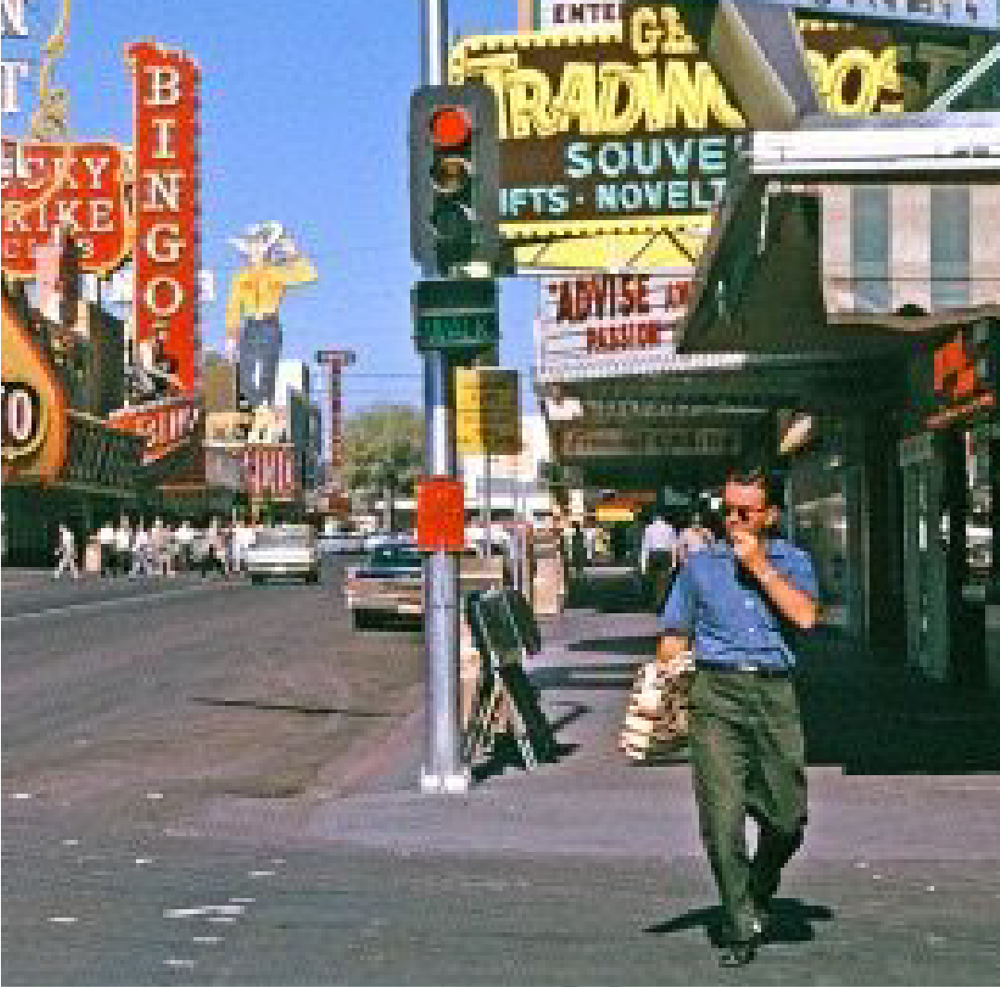
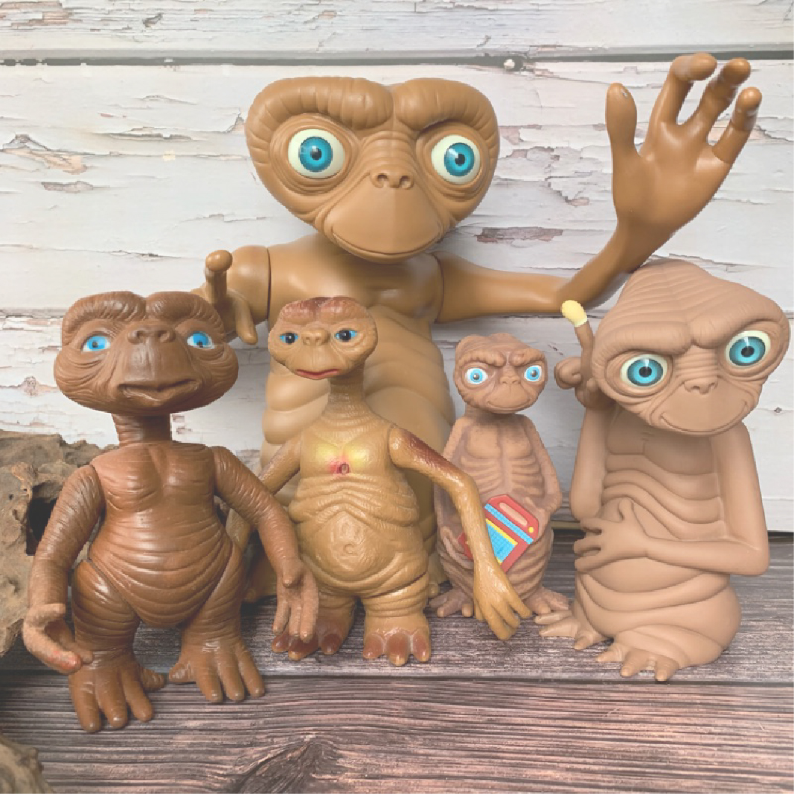
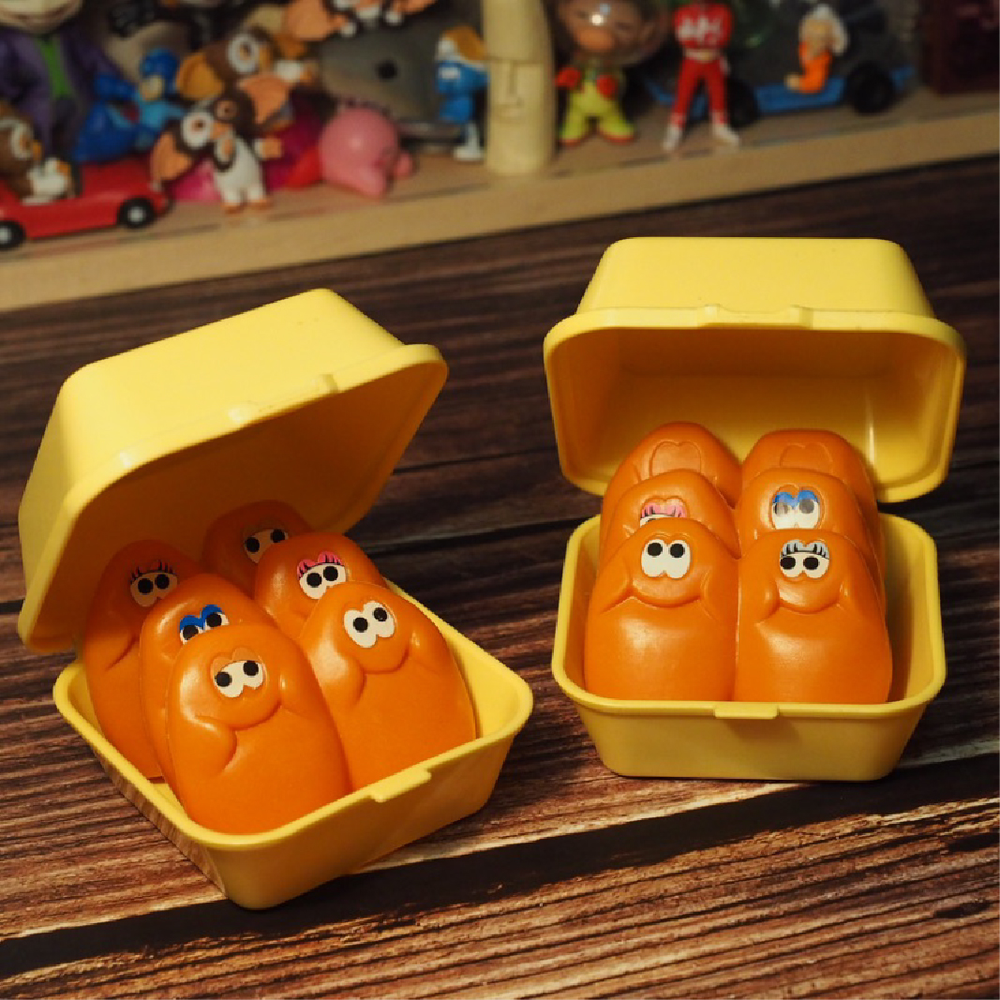

《當與老東西相遇，就永遠無法忘記那迷人的味道》
「經過了很多年以後才深深的感覺到，看待一件古董家具，就像在欣賞一種歷盡滄桑過後那種生命成熟的質感。那是從古代家具中自然散發的人文味道， ......
Read more. ->
《收藏意識 與斷捨離的差別》
不管是新設計或是輾轉流傳的老物，中式家具古色古香且用料實在的外觀，都是老物收藏者的最愛，老物收藏的價值到底何在，陳仁毅先生在他豐富的經歷中，逐漸體認到，並與我們分享 ......
Read more. ->

《[ 特輯 ] 回溯歷史覓得的老物，才是真正的寶藏》
「喜新厭舊」於大多數人而言幾乎可以說是一種常態，褪色了便覺得不喜歡、使用久了便覺得失去新鮮感，總是每隔一段時間就想尋覓嶄新的玩意兒替代，......
Read more. ->《善與自己相處，老物成為最自然的夥伴》
作為古物收藏家兼古董商，生活對 Jin 而言是一趟又一趟建立美感與選物品味觀的功課，就算是旅行，對他來說也是一場美感學習過程。此外，他每天都要閱讀十本書籍、一年看許多 ......
Read more. ->

80代復古ET家族

Furby盒裝玩偶
